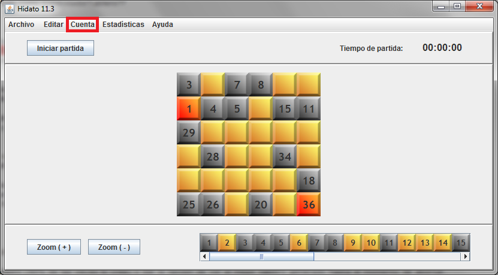
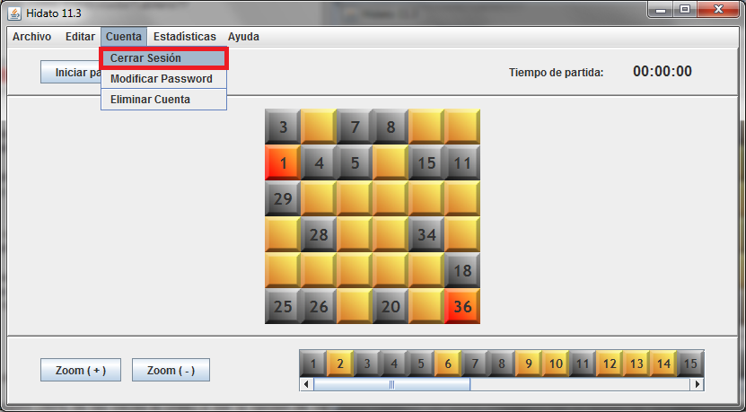

Seleccione el menú 'Cuenta':

A continuación, seleccione 'Cerrar Sesión':

El sistema le preguntará si desea guardar los progresos de la partida actual:
Si pulsa 'Sí', el sistema guardará la partida (más detalle en el apartado Guardar Partida). Si por el contrario pulsa 'No', el sistema cerrará sesión descartando cualquier cambio en la partida actual. Si pulsa 'Cancelar' el sistema no cerrará sesión.